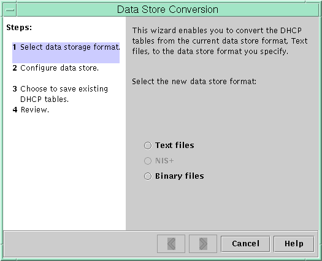

Document Information
Preface
Part I TCP/IP Administration
1. Solaris TCPIP Protocol Suite (Overview)
2. Planning an IPv4 Addressing Scheme (Tasks
3. Planning an IPv6 Addressing Scheme (Overview)
4. Planning an IPv6 Network (Tasks)
5. Configuring TCP/IP Network Services and IPv4 Addressing (Tasks)
6. Administering Network Interfaces (Tasks)
7. Enabling IPv6 on a Network (Tasks)
8. Administering a TCP/IP Network (Tasks)
9. Troubleshooting Network Problems (Tasks)
10. TCP/IP and IPv4 in Depth (Reference)
11. IPv6 in Depth (Reference)
Part II DHCP
12. About Solaris DHCP (Overview)
13. Planning for DHCP Service (Tasks)
14. Configuring the DHCP Service (Tasks)
15. Administering DHCP (Tasks)
About DHCP Manager
How to Start and Stop DHCP Manager
Setting Up User Access to DHCP Commands
How to Grant Users Access to DHCP Commands
Starting and Stopping the DHCP Service
How to Start and Stop the DHCP Service (DHCP Manager)
How to Enable and Disable the DHCP Service (DHCP Manager)
How to Enable and Disable the DHCP Service (dhcpconfig -S)
DHCP Service and the Service Management Facility
Modifying DHCP Service Options (Task Map)
How to Generate Verbose DHCP Log Messages (DHCP Manager)
How to Generate Verbose DHCP Log Messages (Command Line)
How to Enable and Disable DHCP Transaction Logging (DHCP Manager)
How to Enable and Disable DHCP Transaction Logging (Command Line)
How to Log DHCP Transactions to a Separate syslog File
How to Enable Dynamic DNS Updating for DHCP Clients
How to Customize DHCP Performance Options (DHCP Manager)
How to Customize DHCP Performance Options (Command Line)
Adding, Modifying, and Removing DHCP Networks (Task Map)
How to Specify Network Interfaces for DHCP Monitoring (DHCP Manager)
How to Specify Network Interfaces for DHCP Monitoring (dhcpconfig)
How to Add a DHCP Network (DHCP Manager)
How to Add a DHCP Network (dhcpconfig)
How to Modify the Configuration of a DHCP Network (DHCP Manager)
How to Modify the Configuration of a DHCP Network (dhtadm)
How to Remove a DHCP Network (DHCP Manager)
How to Remove a DHCP Network (pntadm)
Supporting BOOTP Clients With the DHCP Service (Task Map)
How to Set Up Support of Any BOOTP Client (DHCP Manager)
How to Set Up Support of Registered BOOTP Clients (DHCP Manager)
Working With IP Addresses in the DHCP Service (Task Map)
How to Add a Single IP Address (DHCP Manager)
How to Duplicate an Existing IP Address (DHCP Manager)
How to Add Multiple IP Addresses (DHCP Manager)
How to Add IP Addresses (pntadm)
How to Modify IP Address Properties (DHCP Manager)
How to Modify IP Address Properties (pntadm)
How to Mark IP Addresses as Unusable (DHCP Manager)
How to Mark IP Addresses as Unusable (pntadm)
How to Delete IP Addresses From DHCP Service (DHCP Manager)
How to Delete IP Addresses From the DHCP Service (pntadm)
How to Assign a Consistent IP Address to a DHCP Client (DHCP Manager)
How to Assign a Consistent IP Address to a DHCP Client (pntadm)
Working With DHCP Macros (Task Map)
How to View Macros Defined on a DHCP Server (DHCP Manager)
How to View Macros Defined on a DHCP Server (dhtadm)
How to Change Values for Options in a DHCP Macro (DHCP Manager)
How to Change Values for Options in a DHCP Macro (dhtadm)
How to Add Options to a DHCP Macro (DHCP Manager)
How to Add Options to a DHCP Macro (dhtadm)
How to Delete Options From a DHCP Macro (DHCP Manager)
How to Delete Options From a DHCP Macro (dhtadm)
How to Create a DHCP Macro (DHCP Manager)
How to Create a DHCP Macro (dhtadm)
How to Delete a DHCP Macro (DHCP Manager)
How to Delete a DHCP Macro (dhtadm)
Working With DHCP Options (Task Map)
How to Create DHCP Options (DHCP Manager)
How to Create DHCP Options (dhtadm)
How to Modify DHCP Option Properties (DHCP Manager)
How to Modify DHCP Option Properties (dhtadm)
How to Delete DHCP Options (DHCP Manager)
How to Delete DHCP Options (dhtadm)
Supporting Solaris Network Installation With the DHCP Service
Supporting Remote Boot and Diskless Boot Clients (Task Map)
Setting Up DHCP Clients to Receive Information Only (Task Map)
Moving Configuration Data Between DHCP Servers (Task Map)
How to Export Data From a DHCP Server (DHCP Manager)
How to Export Data From a DHCP Server (dhcpconfig -X)
How to Import Data on a DHCP Server (DHCP Manager)
How to Import Data on a DHCP Server (dhcpconfig -I)
How to Modify Imported DHCP Data (DHCP Manager)
How to Modify Imported DHCP Data (pntadm, dhtadm)
16. Configuring and Administering DHCP Clients
17. Troubleshooting DHCP (Reference)
18. DHCP Commands and Files (Reference)
Part III IP Security
19. IP Security Architecture (Overview)
20. Configuring IPsec (Tasks)
21. IP Security Architecture (Reference)
22. Internet Key Exchange (Overview)
23. Configuring IKE (Tasks)
24. Internet Key Exchange (Reference)
25. Solaris IP Filter (Overview)
26. Solaris IP Filter (Tasks)
Part IV Mobile IP
27. Mobile IP (Overview)
28. Administering Mobile IP (Tasks)
29. Mobile IP Files and Commands (Reference)
Part V IPMP
30. Introducing IPMP (Overview)
31. Administering IPMP (Tasks)
Part VI IP Quality of Service (IPQoS)
32. Introducing IPQoS (Overview)
33. Planning for an IPQoS-Enabled Network (Tasks)
34. Creating the IPQoS Configuration File (Tasks)
35. Starting and Maintaining IPQoS (Tasks)
36. Using Flow Accounting and Statistics Gathering (Tasks)
37. IPQoS in Detail (Reference)
Glossary
Index
|
Converting to a New DHCP Data Store
Solaris DHCP provides a utility to convert the DHCP configuration data from one
data store to another data store. Several reasons might exist for converting to
a new data store. For example, you might have more DHCP clients, requiring
higher performance or higher capacity from the DHCP service. You also might
want to share the DHCP server duties among multiple servers. See Choosing the DHCP Data Store
for a comparison of the relative benefits and drawbacks of each type of
data store.
Note - If you upgraded from a Solaris release that is older than the Solaris
8 7/01 release, you should read this note. When you run any Solaris DHCP tool after Solaris installation, you are prompted
to convert to the new data store. The conversion is required because the
format of the data stored in both files and NIS+ changed in the
Solaris 8 7/01 release. If you do not convert to the new data
store, the DHCP server continues to read the old data tables. However, the
server can only extend leases for existing clients. You cannot register new DHCP
clients or use DHCP management tools with the old data tables.
The conversion utility is also useful for sites that are converting from a
Sun provided data store to a third-party data store. The conversion utility looks
up entries in the existing data store and adds new entries that contain
the same data to the new data store. Data store access is
implemented in separate modules for each data store. This modular approach enables the conversion
utility to convert DHCP data from any data store format to any other
data store format. Each data store must have a module that the
DHCP service can use. The data store conversion can be accomplished with DHCP Manager through the Data
Store Conversion wizard, or with the dhcpconfig -C command. The initial dialog box of the Data Store Conversion wizard is shown in
the following figure. Figure 15-19 Data Store Conversion Wizard Dialog Box in DHCP Manager Before the conversion begins, you must specify whether to save the old data
store's tables (dhcptab and network tables). The conversion utility then stops the DHCP
server, converts the data store, and restarts the server when the conversion has
completed successfully. If you did not specify to save the old tables, the
utility deletes the tables after determining the conversion is successful. The process of
converting can be time-consuming. The conversion runs in the background with a meter
to inform you of its progress.
How to Convert the DHCP Data Store (DHCP Manager)
- In DHCP Manager, choose Convert Data Store from the Service menu.
See How to Start and Stop DHCP Manager for information about DHCP Manager. The Data Store Conversion wizard opens.
- Answer the wizard's prompts.
If you have trouble providing the requested information, click Help to view detailed information
about each dialog box.
- Review your selections, and then click Finish to convert the data store.
The DHCP server restarts when the conversion is complete. The server immediately uses
the new data store.
How to Convert the DHCP Data Store (dhcpconfig -C)
- Become superuser or assume a role or user name that is assigned to
the DHCP Management profile.
For more information about the DHCP Management profile, see Setting Up User Access to DHCP Commands. Roles contain authorizations and privileged commands. For more information about roles, see Configuring RBAC (Task Map) in System Administration Guide: Security Services.
- Convert the data store by typing a command of the following format:
# /usr/sbin/dhcpconfig -C -r resource -p path - resource
is the new data store type, such as SUNWbinfiles - path
is the path to the data, such as /var/dhcp
Note that if you want to keep the original data in the
old data store after the conversion, specify the -k option. For example, to convert
your data store to SUNWbinfiles and save the old data store, you would
type: # /usr/sbin/dhcpconfig -C -r SUNWbinfiles -p /var/dhcp -k See the dhcpconfig(1M) man page for more information about the dhcpconfig utility.
|